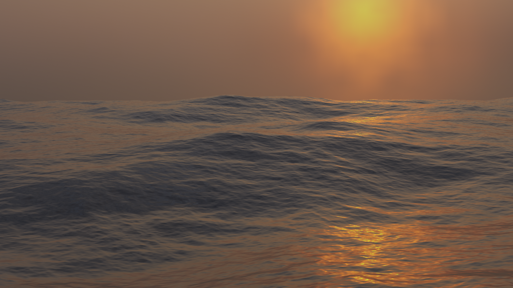
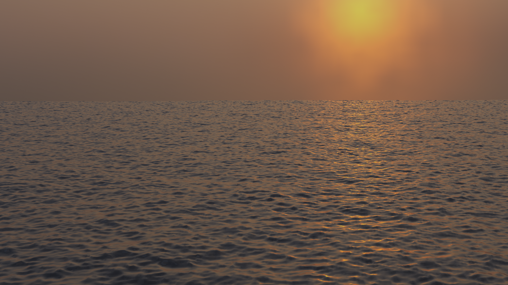

洋面修改器¶
海洋 修改器是一个海洋模拟工具，用于模拟和生成变形的海洋表面以及相关纹理，用于渲染模拟数据。 它旨在模拟深海波浪和泡沫.
这是一个来自开放源码 Houdini Ocean Toolkit 的端口。
选项¶
{kind=link}
海洋修改器。¶
- 几何数据(Geometry)
- 生成
创建与模拟数据的分辨率完全对应的平铺网格栅格.
生成网格曲面时，现有的网格对象将被海洋网格完全覆盖。 还添加了UV通道，将(0.0到1.0)UV空间映射到模拟网格。
- Repeat X, Y
控制网格在X和Y方向平铺的次数。这些平铺网格区域的UV值(0.0到1.0)延续出UV空间。
- 置换
使用现有几何体而不是替换它。 顶点沿自身Z轴平移。
- 分辨率
这是模拟引擎的速度与品质的关键控制点，它决定了由模拟生成的内置二维网格面的精度。
内部网格是分辨率值的二次幂，因此分辨率值为 ”16“ ，将创建大小为 “256×256” 的模拟数据。 分辨率越高，产生的细节就越多，但计算得越慢。
Note
使用 生成 修改器几何体选项时，此分辨率值还决定生成的网格曲面的分辨率，等于内部模拟数据的分辨率。
- 时间
海洋表面的解算时间。要创建一个海洋动画，需要 驱动 该值。时间值变化的速度将决定波浪动画的速度。
- 深度
即模拟区域下方的洋底的恒定深度。 较低的值模拟较浅的水但是波浪更细密。
- 尺寸
一个简单的缩放因子，不影响波的高度或模拟的行为。
- 空间尺寸
模拟海洋表面区域的宽度，以米为单位。 这也决定了生成的网格或位移区域的大小。 当然，您可以在物体模式中的 海洋 修改器缩放对象，以调整场景中的外观尺寸。
- 随机种
A different Seed will produce a different simulation result.
- 生成法线
Simulates extra normal map data. This can be used by the Ocean texture, when mapped to Normals, as a bump map, and enables generating normal map image sequences when baking.
波浪¶
- 比例
这是对波幅的总体缩放控制。它能够通过正负值控制波浪的高度或深度。它不仅能够对洋面物体进行Z向缩放，而且可以对各个模拟面进行缩放，包括X与Y向的置换，以及对应的水沫与法线。
- 最小波浪
指定所生成波浪尺寸的下限。与低通滤波器功能相仿，这会将高频波浪的细节移除。
- 翻滚度
波峰的翻滚程度。当翻滚度值为0时，海洋表面只是在Z方向上做上下置换。而较高的翻滚度值则会让波浪产生X向与Y向的置换效果，来产生较为尖锐的波峰效果。
- 风速率
风速以米/秒为单位。风速较低时，表面会形成会相应较小的波浪。
- 对齐
The directionality of the wave shapes due to wind. At a value of 0, the wind and waves are randomly, uniformly oriented. With higher Alignment values, the wind is blowing in a more constant direction, making the waves appear more compressed and aligned to a single direction.
- 方向
当使用 对齐 时，波浪对齐到的角度方向(使用自身X轴作为参考)。
- 阻尼
当使用 对齐 时，这将定义相互反射波的阻尼量。这样做的效果是使波的运动更有方向性(不仅仅是波的形状)。
当 阻尼 为0.0时，波会在各个方向相互反射，当 阻尼 为1.0时，这些相互反射的波会被阻尼抵消掉，只留下沿风的方向传播的波。
泡沫¶
模拟其他泡沫数据。
这可以通过海洋纹理获取，用于纹理创建(可能作为遮罩)，并允许在烘培时生成泡沫映射图像序列。
- 数据层
顶点数据层的可选名称，由海洋修改器用于将泡沫贴图存储为顶点颜色。 这是访问渲染器中的泡沫数据所必需的.
- 范围
调整覆盖波浪的泡沫量，负值将减少泡沫量(仅留下最高的顶峰)，正值将增加。 通常其范围从(-1.0到1.0)。
使用指定数据层的泡沫顶点颜色。¶
浪花¶
Generate map of spray direction as a vertex color channel. This map can be used to define the velocities for spray particles.
- Spray Map
Name of the vertex color layer used for the spray direction map.
- Invert
Inverts the spray direction map.
色谱¶
- 色谱
Used to choose the wave spectrum model to use. Wave spectra are used to describe how energy moves through the waves at different frequencies. Energy travels through waves differently depending on the depth of the water and the wind speed.
- 湍流海洋
用于创建带水沫的湍流海洋(Phillips)。
- 创建大洋(尖海浪)
Use for a large area, established ocean where the ocean would extend for miles with wind blowing for days allowing the waves to reach a point of equilibrium (Pierson-Moskowitz method).
- 创建大洋(尖海浪)
Similar to regular Established Ocean however, waves will continue to grow with time creating sharper peaks (JONSWAP and Pierson-Moskowitz method). An extra parameter is used to define the sharpness of these peaks.
- 浅水
Use for shallow water with depths less than about 10 meters which makes it great for small lakes and ponds without heavy wind (JONSWAP and TMA -- Texel-Marsen-Arsloe methods).
Examples of different spectra, settings adjusted for each.¶ 湍流海洋。¶

创建大洋。¶
创建大洋(尖海浪)。¶
浅水。¶
- 尖海浪
An artificial factor to control how sharp the peaks of the waves are in the Established Ocean (Sharp Peaks) and Shallow Water spectrum models.
- 吹程
Distance from a lee shore, called the fetch, or the distance over which the wind blows with constant velocity. Used by Established Ocean (Sharp Peaks) and Shallow Water spectrum models.
烘培¶
与其实时模拟海洋数据，不如将数据烘培到指定目录中的文件中。当模拟完成后，将完全绕过模拟器引擎，修改器/纹理将从烘培文件中检索所有信息。
烘焙具有以下优势：
It is faster to use the stored data rather than recalculating it.
允许使用外部渲染器对海洋数据进行渲染。
允许使用更为高级的水沫贴图.
模拟数据作为 OpenEXR 图像映射的序列存储在硬盘上，每个图像映射对应位移，法线和泡沫(如果能够生成)。 在从这些烘焙文件加载数据时，当从硬盘读取烘焙序列的帧时，它被缓存在内存中。 这意味着随后访问加载的帧很快，不会产生硬盘访问的开销.
由于这些烘焙文件只是普通 OpenEXR ，所以它们也可以在支持它们的任何其他应用程序或渲染器中打开和渲染.
- 缓存路径
烘焙的EXR文件的存储路径。序列格式为
disp_####.exr,normal_####.exr, andfoam_####.exr，这里的####代表四位数的帧数值。如果缓存路径文件夹不存在，将创建一个新的。- 起始帧、结束帧
用于烘焙模拟的帧范围(包括首尾)。当从烘焙范围外进行烘焙时，始帧与末帧将被重复执行烘焙操作。
- 水沫消退
烘培还提供改进的泡沫能力。 在实时模拟时，海洋模拟器仅检索当前帧的数据。 在泡沫映射的情况下，这代表给定帧的波峰顶端。 实际上，在通过波浪相互作用产生泡沫之后，它会在波浪表面的顶部保持一段时间，因为它会消散。 通过烘培，可以通过累积前一帧中的泡沫使其保持在表面上来近似该行为。
例子¶
在Blender中模拟和烘焙图像映射，在3Delight渲染。